Diseño Instruccional · LMS · IA Educativa · E-learning
Diseño experiencias de aprendizaje digitales que conectan pedagogía, tecnología e innovación educativa. Especialista en arquitectura LMS, producción e-learning e integración de IA en entornos formativos. Mi base en artes visuales me permite tomar decisiones de diseño fundamentadas en principios cognitivos y estéticos — una combinación poco común en el campo.
Caso destacado
Desafío
17 estudiantes de 4° año de Pedagogía en Artes Visuales con 4 semestres sin práctica sistemática de dibujo anatómico. 11 de 17 trabajaban part-time. El ecosistema de herramientas múltiples propuesto inicialmente (Genially + Google Forms + WhatsApp) aumentaba la carga cognitiva extrínseca sin resolver el problema formativo.
Mi rol
Diseñadora instruccional y desarrolladora única del sistema. Lideré el proceso completo: análisis de necesidades, diseño de la arquitectura instruccional, producción de contenidos, configuración técnica, implementación con estudiantes reales y evaluación de resultados.
Proceso
Se aplicó ADDIE como marco estructural y ABP como metodología principal — elegida porque las competencias de dibujo son psicomotoras y requieren práctica repetida. Los objetivos se redactaron con taxonomía de Bloom antes de producir contenido. La evaluación se definió antes de las actividades (Backward Design).
Herramientas
HTML5 · CSS3 · JavaScript · Google OAuth · Google Sheets (via Apps Script) · GitHub Pages · LocalStorage para persistencia · Dashboard analítico con exportación CSV
Resultados
76% tasa de finalización · 88% progreso promedio · 156 evaluaciones aprobadas · 17 estudiantes activos · Costo operativo $0 · Disponibilidad 24/7
Lo que aprendí
La mejor solución técnica no siempre es la más compleja. Simplificar la arquitectura redujo la fricción de acceso y aumentó la completación. La separación entre datos de aprendizaje (localStorage) y datos de investigación (Google Sheets) fue una decisión instruccional, no solo técnica.
Portafolio
Tres proyectos recientes que demuestran capacidad técnica y pedagógica en entornos virtuales.
LMS Independiente · Moodle · Educación Superior
Plataforma LMS desarrollada de forma autónoma para complementar la Cátedra de Dibujo y Representación en educación superior. Arquitectura completa con roles diferenciados, dashboard analítico, seguimiento de progreso por módulo y mentor conversacional con IA integrada. El sistema de roles —instructor, estudiante, evaluador y visitante demo— fue diseñado para servir simultáneamente a múltiples stakeholders: los 17 estudiantes UAH como aprendices principales, el comité evaluador de la Universidad de Chile como observadores externos del modelo, y académicos de la UAH como revisores pedagógicos. Resultado: 17 estudiantes activos, 76% tasa de finalización, 88% progreso promedio y 156 evaluaciones aprobadas.
Enfoque instruccional
Diseñado bajo Backward Design con metodología ABP: los objetivos de aprendizaje se definieron antes de producir contenido, las evaluaciones se estructuraron como evidencias de logro, y las actividades como práctica progresiva. ABP se eligió porque las competencias de dibujo son psicomotoras y requieren práctica sistemática, no solo exposición. La carga cognitiva extrínseca se redujo concentrando toda la funcionalidad en una sola plataforma autocontenida.
Mi aporte en este proyecto
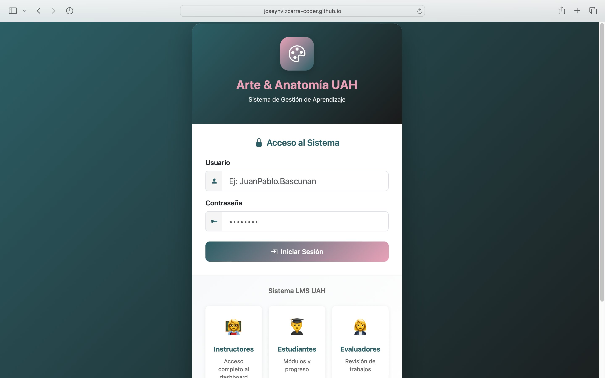
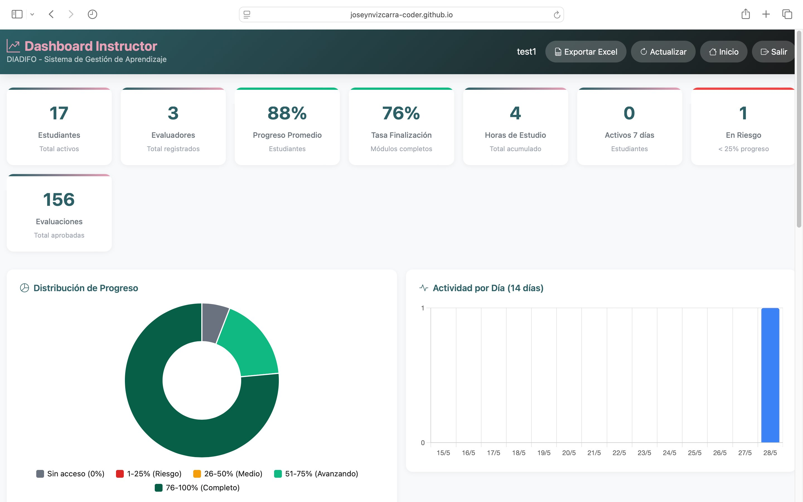
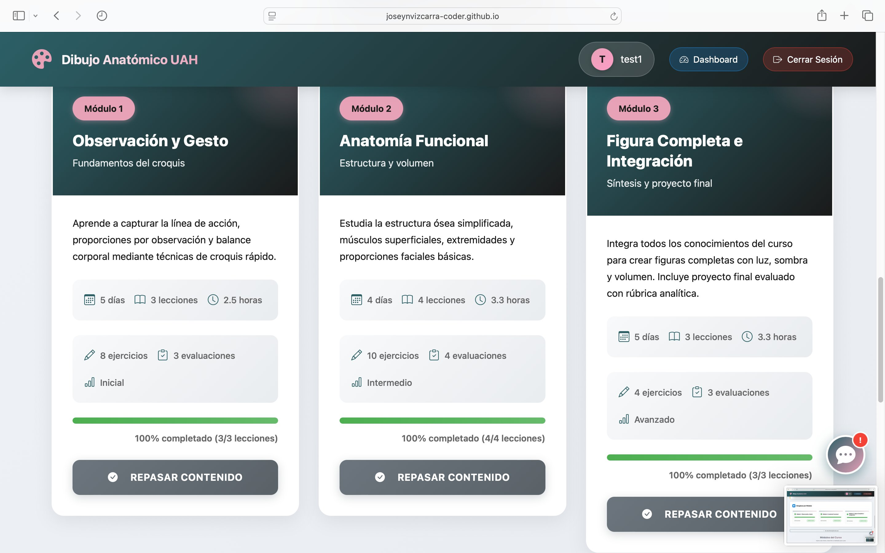
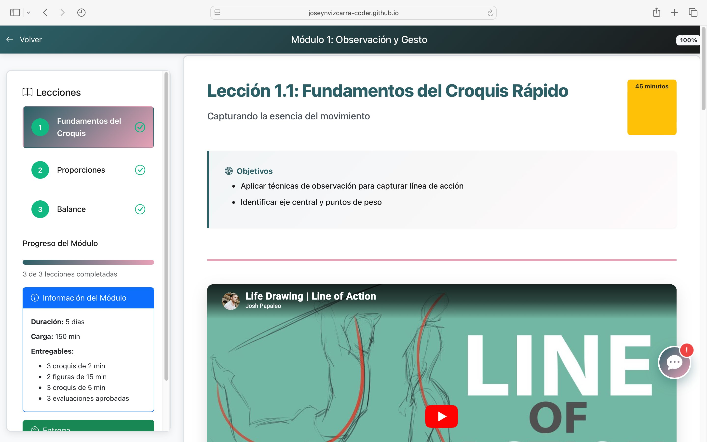
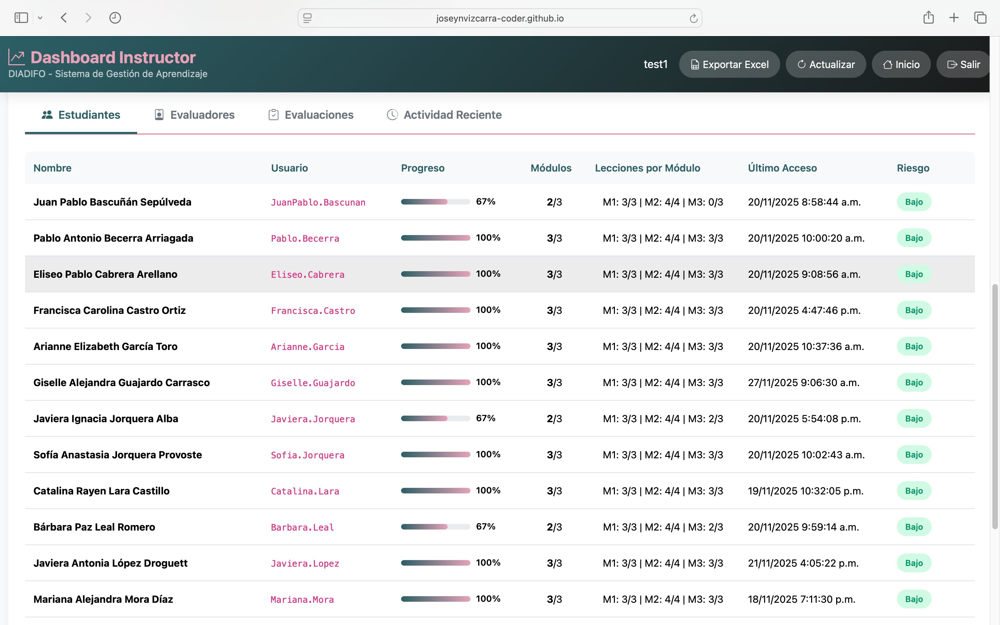
Virtualización · Brightspace · Educación Superior
Diseño y virtualización de 5 cursos en Brightspace para pregrado universitario: Competencias Interculturales, Estudios de Género, Teología y Desafíos Culturales, Participación Ciudadana y Espiritualidad Ignaciana. Cada curso incluye módulos secuenciales, ruta de aprendizaje, bibliografía curada, video síntesis, audio de estudio, recursos multimedia y evaluaciones alineadas constructivamente.
Enfoque instruccional
Cada curso aplica alineamiento constructivo (Biggs): los objetivos de aprendizaje —redactados con taxonomía de Bloom revisada— determinan las actividades y los instrumentos de evaluación. La complejidad cognitiva escala progresivamente entre módulos, desde la comprensión hacia el análisis y la síntesis.
Mi aporte en este proyecto
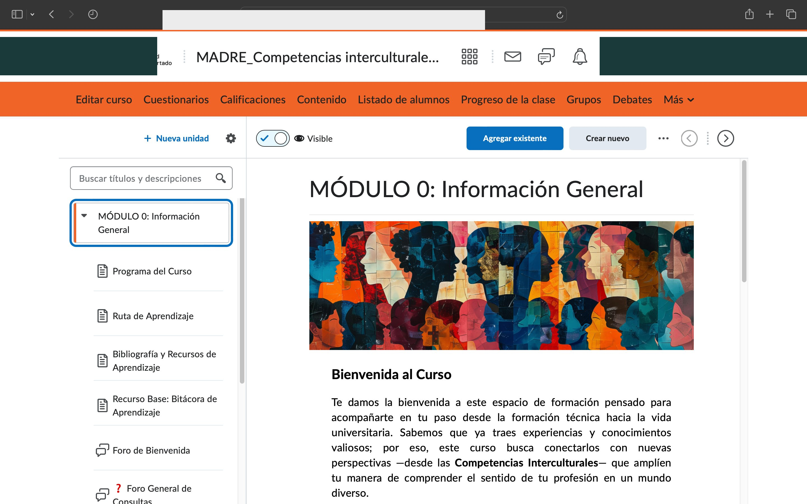
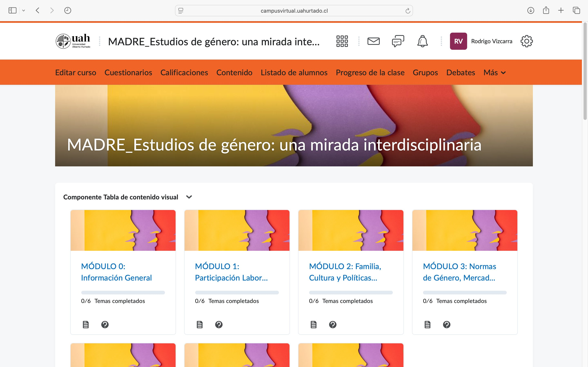
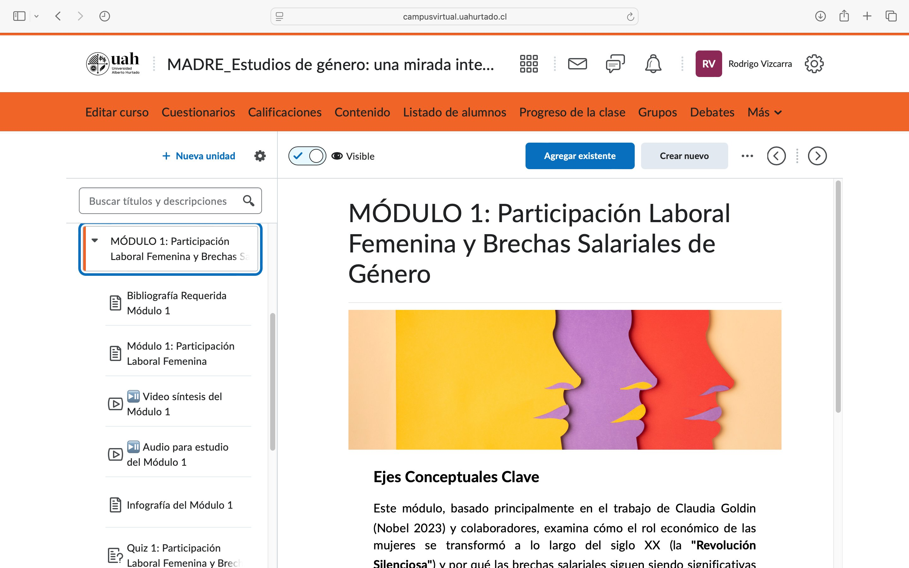
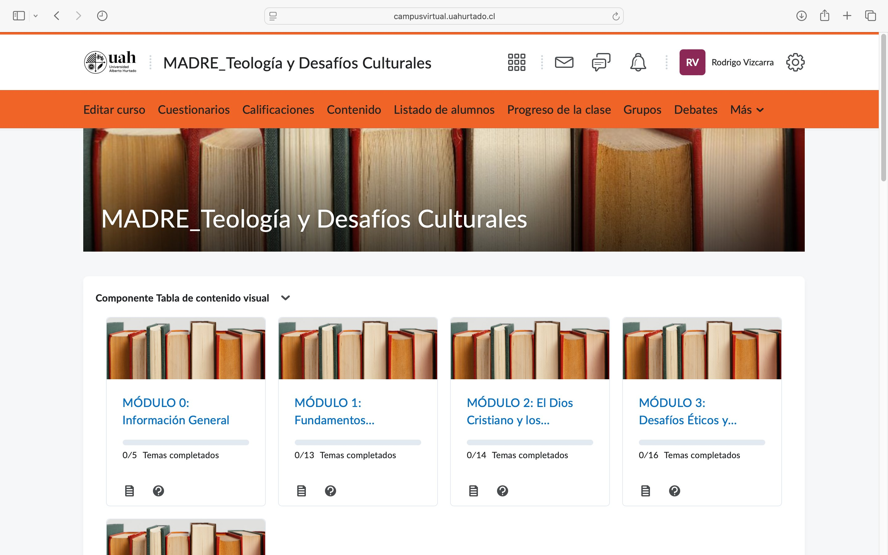
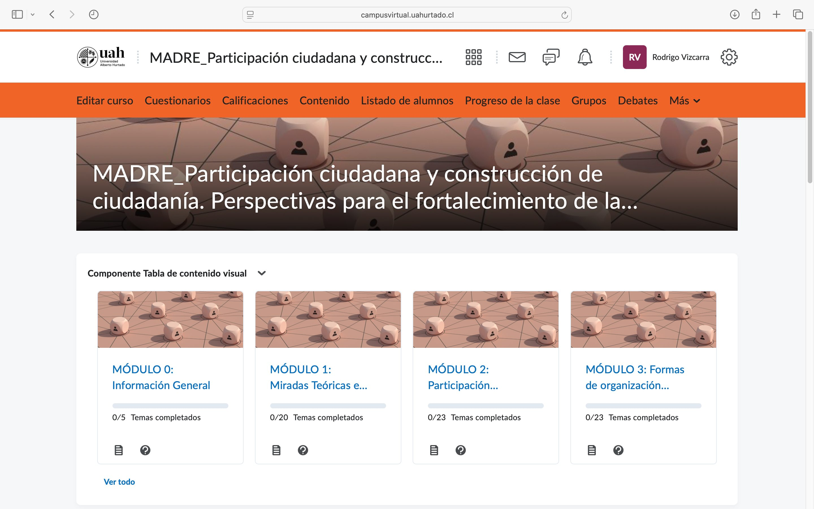
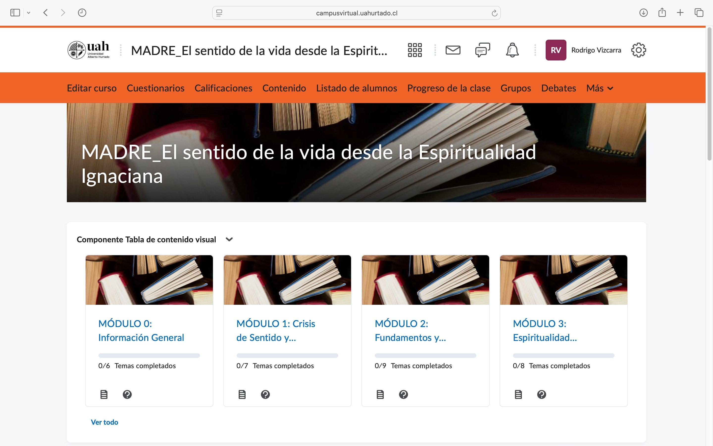
Aula Virtual · Moodle · H5P · Educación Superior
Diseño e implementación de aula virtual en MoodleCloud para la Facultad de Medicina. Incluye arquitectura modular secuencial, contenido teórico estructurado, actividad interactiva H5P (Image Hotspot sobre sistema muscular), video integrado y evaluación con banco de 5 preguntas de opción múltiple con retroalimentación específica.
Enfoque instruccional
La actividad H5P Image Hotspot se diseñó aplicando el principio de señalización de Mayer: guiar la atención hacia elementos clave del sistema muscular antes de la evaluación sumativa. El cuestionario incluye retroalimentación específica por respuesta, diferenciando el feedback según el error cometido.
Mi aporte en este proyecto
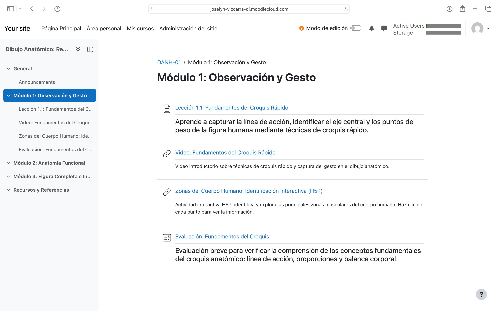
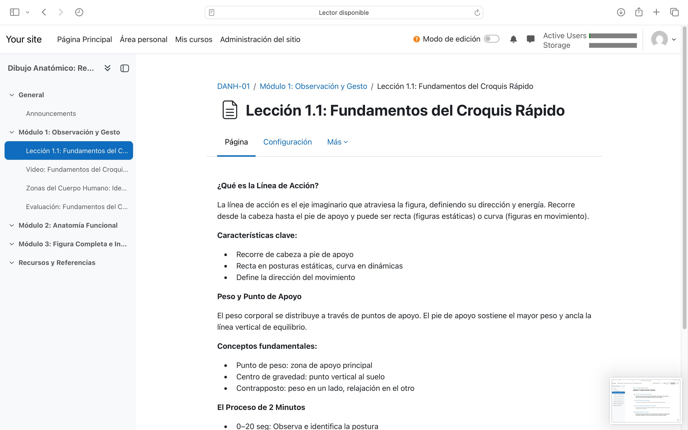
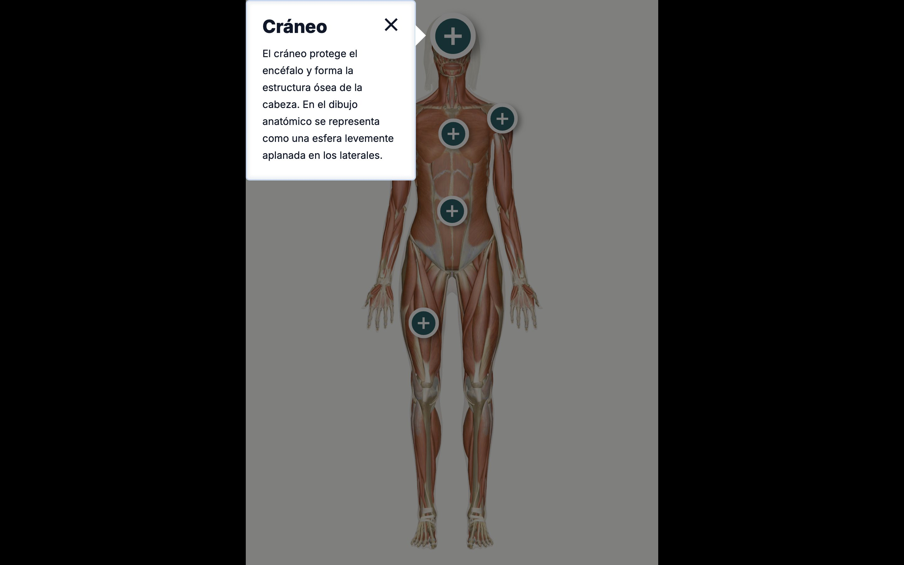
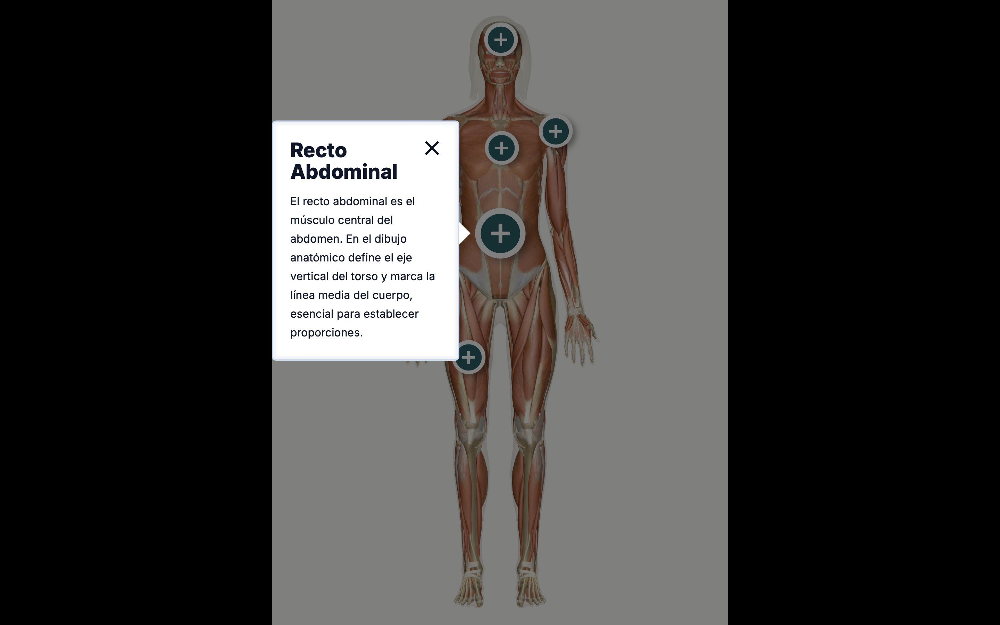
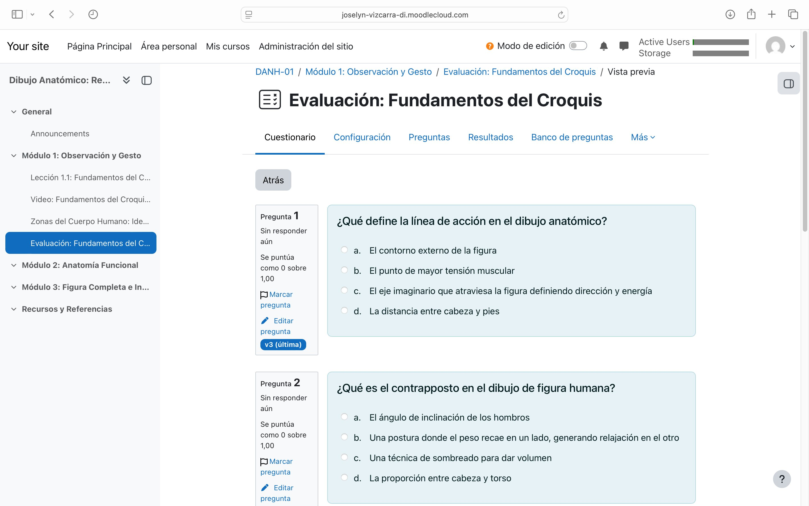
Metodología de trabajo
Trabajo desde los resultados de aprendizaje hacia atrás (Backward Design), defino las evidencias de logro antes de producir contenido, y utilizo los datos de la plataforma para iterar el diseño.
Formación académica
2025
Diplomado en Diseño Instruccional
Aplicado al desarrollo de instancias formativas online
Universidad de Chile
2021 · Cum Laude
Licenciatura y Pedagogía en Artes Visuales
Didáctica, desarrollo curricular y metodologías de enseñanza
Universidad Alberto Hurtado
2023
Diplomado en Estudios en Artes
Mención Pintura — Técnicas contemporáneas y teoría del color
Pontificia Universidad Católica de Chile
Sobre mí
Soy Profesora de Artes Visuales y Licenciada en Educación (Universidad Alberto Hurtado, Cum Laude), con Diplomado en Diseño Instruccional aplicado a instancias formativas online (Universidad de Chile, 2025).
A lo largo de más de seis años he combinado la docencia con el desarrollo técnico de plataformas LMS, la virtualización de contenidos y la formación de equipos docentes en modalidades virtuales e híbridas. He virtualizado 5 cursos en Brightspace para educación superior, construido un LMS propio con IA integrada y diseñado aulas en Moodle con recursos H5P interactivos, logrando un 76% de tasa de finalización y 156 evaluaciones aprobadas.
He facilitado procesos de acompañamiento pedagógico con equipos docentes universitarios, asesorando en la integración de tecnología educativa y el diseño de actividades evaluativas en plataformas virtuales. En la UAH actué como nexo entre la jefatura de cátedra y los procesos de digitalización, apoyando a docentes en el uso del LMS y la configuración de recursos interactivos.
Mi enfoque integra principios pedagógicos sólidos con competencias técnicas en producción e-learning, con especial interés en la integración de inteligencia artificial como herramienta de apoyo al aprendizaje y el diseño de experiencias breves y evaluables.